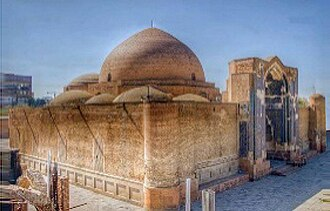

Pagpapakilala
La mosquée bleue est un édifice religieux situé à Tabriz, construite en 1465 pour une dynastie Turkmène. La mosquée a été gravement endommagée lors d'un tremblement de terre en 1780, ne laissant que l'iwan. Elle est actuellement assez ruinéemais appartenait à un grand complexe architectural comprenant entre autres une citerne, une bibliothèque, une tombe et une khanqah. La partie survivante n'est d'ailleurs pas clairement identifiée
المسجد الأزرق أو مسجد كبود أو مسجد جهانشاه هو أحد مساجد مدينة تبريز التاريخية بـمحافظة أرذبيجان الشرقية في إيران، وهو من بقايا دولة قراقويونلو التي حكمت إيران. بُني المسجد عام 1465م بأمر من جان بيك خاتون زوجة الملك جهان شاه. تهدم سقف المسجد خلال زلزال عام 1778م ولم يتبقَ منه سوى الجزء العلوي من بوابة المدخل، ثم أعاد إعماره رضا معماران انجام في عام 1973م تحت إشراف وزارة الثقافة الإيرانية. يوجد في المسجد العديد من الكتابات والزخارف وقطع القيشاني.
The Blue Mosque, also known as the Masjed-e Moẓaffariya and as the Kabood Mosque, is a former mosque and mausoleum complex, in a partial ruinous state, partially preserved as a museum, located in Tabriz, East Azerbaijan province, Iran. The construction of the former mosque started during the Qarā Qoyunlu dynasty and was completed in 1465, but the mausoleum extension south of the mosque was completed later during the reign of the Āq Qoyunlu, into the 1480s CE.
Gök Mescid, İran'ın Tebriz şehrinde bulunan, Karakoyunlu hükümdarı Cihan Şah tarafından yaptırılan cami.
Masjid Biru, juga dikenal sebagai Masjed-e Moẓaffariya dan Masjid Kabood, adalah bekas kompleks masjid dan mausoleum yang kini sebagian berada dalam keadaan reruntuhan dan sebagian dipertahankan sebagai museum, terletak di Tabriz, Provinsi Azerbaijan Timur, Iran. Pembangunan bekas masjid tersebut dimulai pada masa dinasti Qara Qoyunlu dan selesai pada 1465, sementara perluasan mausoleum di bagian selatan masjid diselesaikan kemudian pada masa pemerintahan Aq Qoyunlu hingga dekade 1480-an M.
Die Kabud-Moschee oder Blaue Moschee ist eine Moschee in der Stadt Täbris im Iran.
La mezquita Azul es una importante mezquita situada en la ciudad de Tabrīz, Irán. La mezquita, junto con otros edificios públicos, fue construida en 1465 por órdenes de Jahān Shāh, rey de Kara Koyunlu.
La moschea Blu è una famosa storica moschea di Tabriz in Iran. La moschea e alcuni altri edifici pubblici furono costruiti nel 1465 per ordine di Jahan Shah, il sovrano di Kara Koyunlu.
A Mesquita Azul é uma mesquita histórica famosa em Tabriz, no Irã. A mesquita e alguns outros edifícios públicos foram construídos em 1465 por ordem de Jeã Xá, o governante dos Cordeiros Negros.
De Blauwe moskee van Tabriz Masjed-i Kabud, is een beroemde historische moskee in Tabriz in het noordwesten van Iran. De moskee dankt haar naam aan het gebruik van blauwe tegels.
Голубая мечеть — известная историческая мечеть в Тебризе, Иран. Мечеть и некоторые другие общественные здания были построены в 1465 по приказу Джаханшаха, правителя Кара-Коюнлу.
Blå moskén är en moskébyggnad i Tabriz i provinsen Östazarbaijan i Iran, som uppfördes 1465. Moskén skadades allvarligt i en jordbävning 1780, som bara lämnade ingångshallen intakt.
Moscheea Albastră din Tabriz este o moschee din orașul Tabriz, Iran. Aceasta este cea mai importantă și mai cunoscută moschee din acest oraș, fiind monument național.
Sa mapa
Mga dokumento at link
- Wikipédia — Français
- Wikipédia — العربية
- Wikipédia — English
- Wikipédia — Türkçe
- Wikipédia — Bahasa Indonesia
- Wikipédia — اردو
- Wikipédia — Deutsch
- Wikipédia — Español
- Wikipédia — Italiano
- Wikipédia — Português
- Wikipédia — Nederlands
- Wikipédia — 中文
- Wikipédia — Русский
- Wikipédia — Svenska
- Wikipédia — Română
- Wikidata — Q1519733
Datos: Wikidata (CC0), ina-update tuwing 3 buwan. Ang taon ay ang pinakamaagang alam na petsa ng pagkakatayo ng gusali: para sa gusaling naging moske kalaunan (gaya ng Hagia Sophia), ito ang taon ng orihinal na gusali. Mga larawan: Wikimedia Commons, ang may-akda at lisensiya ay nasa pahina ng bawat larawan.